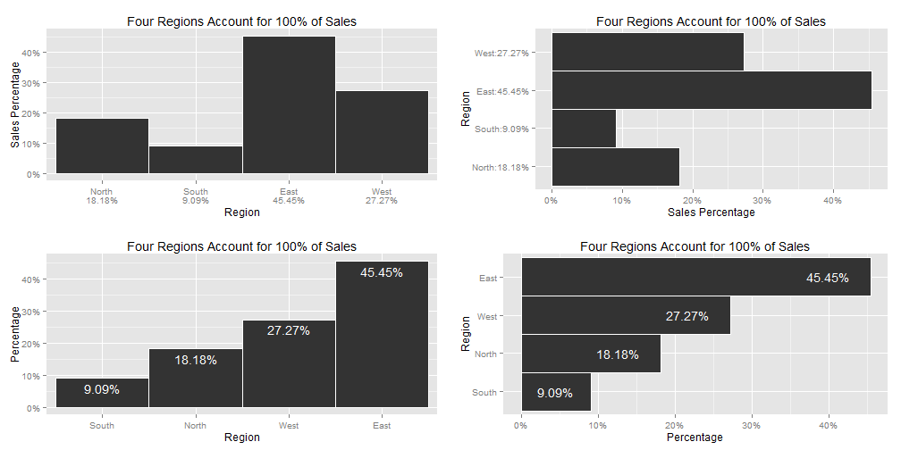

- points
- lines
- bars
- boxes
- shapes with varying 2-D areas
- shapes with varying color intensity
Variations in and Design of Graphs
Vivek Patil, Ph.D.
Associate Professor of Marketing
Representation of quantitative values
Encoding Categorical Variables
- 2D position
- Hue
- Point Shape
- Fill pattern
- Line Style
Relationships usually displayed in graphs
- Time Series: Changes in variable(s) over time (Change, rise, increase, fluctuate, grow, decline, decrease, trend)
- Ranking (larger/smaller/equal to/greater/lesser)
- Part-to-whole (rate/percent/share of total/accounts for n percent)
- Deviation (absolute/percentage/rate of deviations from a reference value,)
- Distribution (frequency, distribution, range, concentration, normal)
- Correlation (how variables covary - increases/decreases/changes with, caused by, affected by)
- Geospatial (spatial, geographical - county/city/region/state/...)
- Nominal comparison (simple comparison of categorical variables - alphabetical/ascending/descending)
Nominal Comparisons

Time Series

Ranking

Part-to-Whole
Part-to-Whole
Pie-charts, for their disadvantages, are easily recognized. Can use bars close to each other. 
Deviation Designs

Studying Distributions

More distributions

Correlations
Geo-Spatial Designs

Geo-Spatial Designs

Geo-Spatial Designs

Geo-Spatial Designs

Graphs versus Tables
- Graphs for richer, more complex and more difficult statistical material. Show comparisons/relationships.
- If data can be summarized in one or two numbers, use numbers.
- Small, noncomparative, highly labeled datasets in tables.
- If datasets have 20 numbers or fewer, use tables
Aesthetics and Technique
Graphical elegance is often found in simplicity of design and complexity of data
- Avoid sentence when having more than two numbers
- Tables are best to show exact numerical values.
- Pie-charts are dumb, series of them are dumber - never use them
- A supertable that permits many comparisons may be better than a series of little bar charts - Always?
- Mix words with graphics and tables. They have a single purpose - presentation of information.
- Avoid "See figure x".
- Purpose of graphic - in exploratory data analysis, words should tell viewer how to read the design and not what to read in terms of content. (Other purposes could be description, tabulation, or decoration)
- Proportion and scale
- line weight and lettering
- shape (tend towards horizontal) (1:1.4-1:1.8)
Maximize Data-Ink Ratio
- data-ink: Non-erasable core of a graphic
- non-data ink: erasable components of a graphic (e.g., axis lines, tick marks, labels...)
- data-ink ratio = (data-ink/total-ink)=(1-proportion of graphic that can be erased without loss of data-information)
For non-data-ink, less is more; For data-ink, less is a bore (Tufte credits Ludwig Mies van der Rohe and Robert Venturi)
Improving data-ink by emphasizing data?

Background? White versus grey or any other color?
Gridlines?

Framing
Box plot

Scatter plots
Dot-dash plot + box-plots + means = Dot-dash-mean-box plots
Mean in blue and median in red
Dot-Dot Mean Box-plots
Dot-Dotplots

Bar plots (dummy data)

Multifunctioning Graphical Elements
- Mobilize every graphical element to show the data - can lead to complexity

Slopegraph
High Data Density plots
data density = number of entries in data array/area of data graphic

300 numbers per square inch
Small Multiples
Collections of mini figures arranged to portray a single animated figure (e.g.,Gelman's voucher map)

Sparklines - Word-sized graphics - Example, change in population of Austria (1981-2009)
| Mean | Boxplot | LinePlot | BarPlot | Current value | |
|---|---|---|---|---|---|
| Total | 7884750.66 |  |  |  | 8355260 |
| Men | 3791573.55 |  |  |  | 4068047 |
| Women | 4093177.1 |  |  |  | 4287213 |
| Men per 1000 Women | 925.97 |  |  |  | 949 |
| Age 0-19 | 1899456.83 |  |  |  | 1763948 |
| Age 20-64 | 4778240 |  |  |  | 5140425 |
| Age 65+ | 1207053.83 |  |  |  | 1450887 |
| Age 75+ | 541649.59 |  |  |  | 665415 |
Deception in Graphs
- Truth telling - bars with a zero base
- Comparison of equal time frames (4 quarters in a year versus 2 quarters in another year)
- Distortion of graphic: Visual representation of data not consistent with numerical representation of data
- lie factor = size of effect shown in graphic /size of effect in data; .95-1.5 good, 1, best.
- Show variations in data and do not introduce variations in design of chart (3D needed?)
- In time series displays of money, use deflated and standardized units of monetary measurements over nominal units.
- Distortion by using areas to show one-dimensional data - (a) ambiguities in perception of 2D surfaces to convert to a one-D number; (b) changes in physical areas do not produce proportional changes in perceived areas. The number of information-carrying dimensions (variables) in graphics should not exceed number of dimensions in data.
Deception: Zero Base in Bar Charts

Lie factor of 14.8

Lie factor of 9.4

Lie factor of 2.8 (plus other issues)

Using multiple dimensions to depict one dimensional change

Surface area of 1978 dollar should've been twice as big as shown to reflect purchasing power change
Time frame deception

Chartjunk
Vibration and movement in optics: Design interactions with physiological tremor of eye
- Use shades of gray when color fills not advisable
- label with words than create cross-hatched designs
Gridlines: None versus shades of grey?
Avoid

Acknowledgement for images, content used in the presentation, and code for presentation
https://github.com/patilv/02-PerceptionandVariationsinGraphs